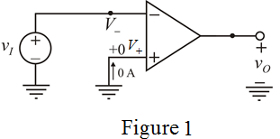

Substitute for  in equation (1).
in equation (1).
Consider the output voltage range is .
Determine the range of voltage at inverting terminal.
Therefore, the maximum voltage by which the ‘virtual ground node’ departs from its ideal value is .
Consider the op-amp is ideal type.
Draw the circuit diagram.

Voltages at the inverting non-inverting terminal are same.
Write the expression for open-loop voltage gain.
…… (1)
Determine the expression for input voltage, .
Substitute for in equation (1).
Consider the output voltage range is .
Determine the range of voltage at inverting terminal.
Therefore, the maximum voltage by which the ‘virtual ground node’ departs from its ideal value is .